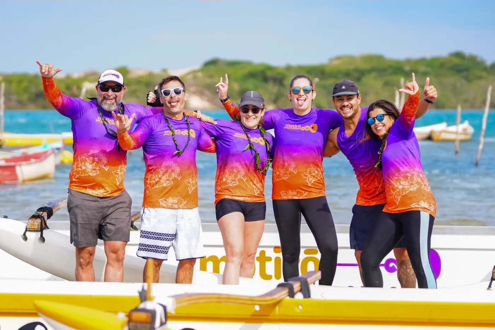
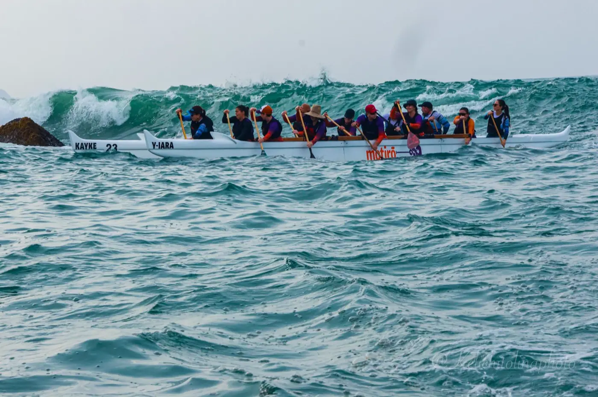
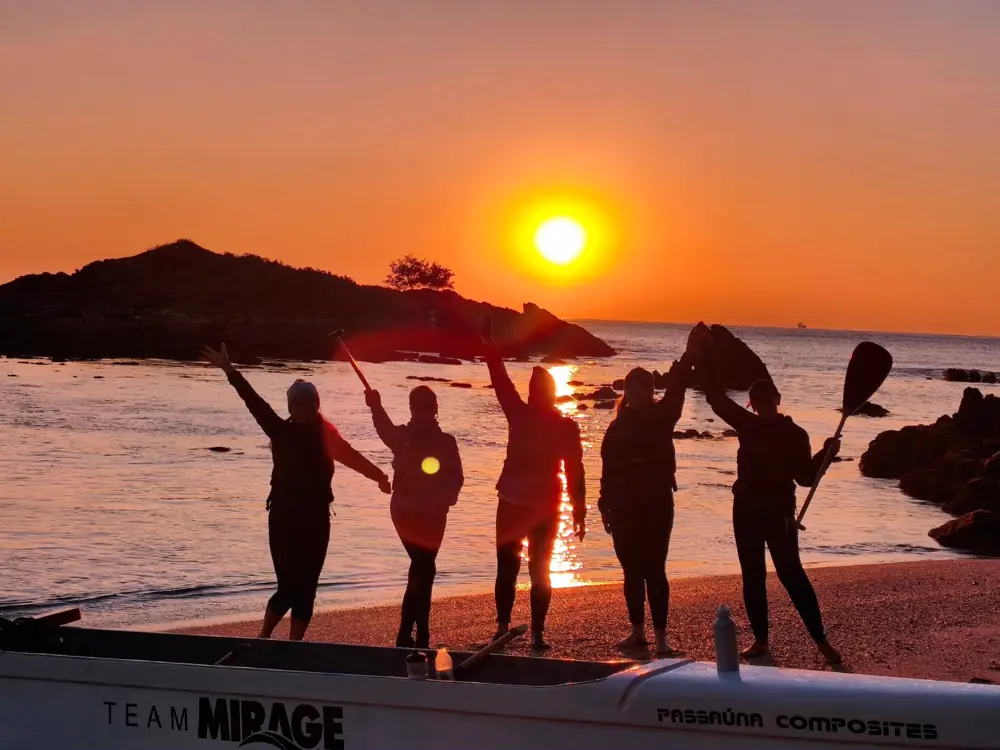
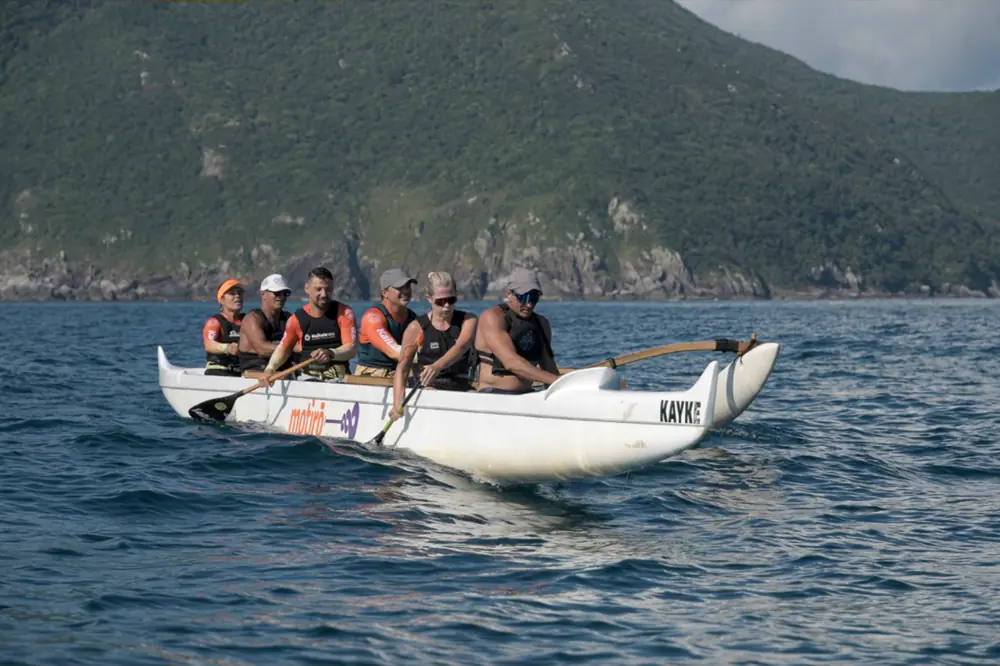
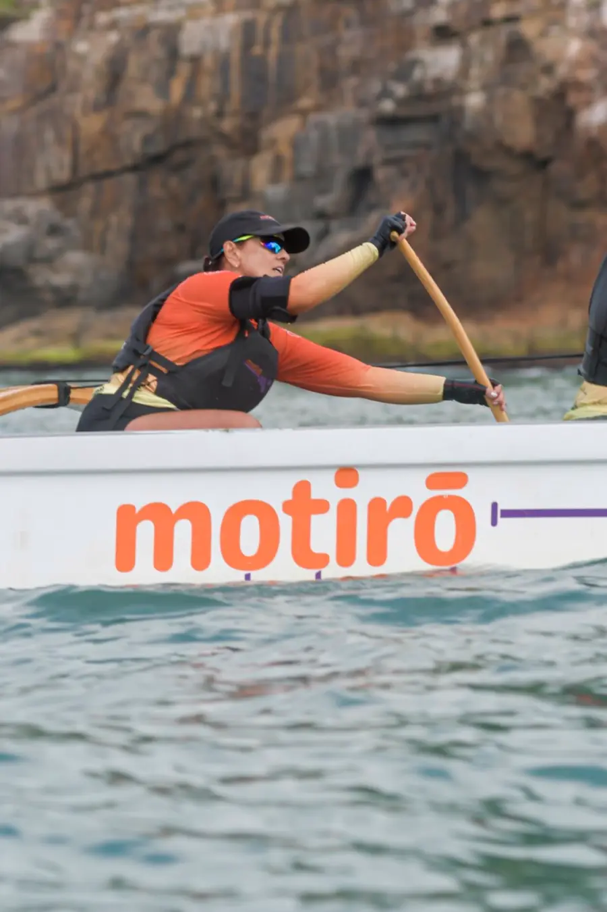
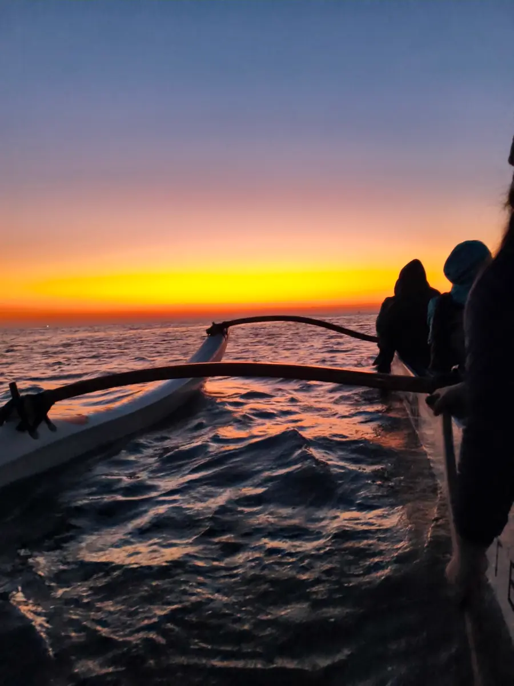

1x por semana
R$ 195/mês
1 horário fixo.
EscolherMotirõ é uma palavra tupi-guarani: a reunião de pessoas para construir ou colher algo juntas, ajudando umas às outras.






Cada remada leva até 12 pessoas. Escolha um horário com vaga ou entre na lista de espera das lotadas.
Vagas de exemplo nesta maquete. No site, vêm do painel em tempo real.
Horários fixos toda semana. Mensalidade com vencimento no dia 10, paga por Pix.
1 horário fixo.
Escolher2 horários fixos.
Escolher3 horários fixos.
EscolherTodas as remadas da semana, incluindo o treino de segunda 8:15.
Escolher
Luciano Silveiro entrou num barco pela primeira vez em 1991, aos 13 anos, como timoneiro do avô, remador de um clube de Porto Alegre.
Nunca se afastou do mar e do surfe. A canoa havaiana virou a ponte entre esses dois mundos: a técnica do remo com a liberdade do oceano.
Uma OC6 leva seis pessoas e cada banco tem uma função. Toque num remador para conhecer o lugar dele.
Remadas até a troca: 12
Dita o ritmo. Toda a tripulação acompanha a remada do banco 1.
Saída: Av. Min. Victor Konder, Fazenda, Itajaí–SC.
Não precisa saber nadar, mas é recomendável.
Venha de sandália ou chinelo: a remada é descalça.
Traga protetor solar e água.
No meio da aula tem uma parada para mergulho, pra quem quiser.
Aula experimental por R$ 75, descontados se você fechar um plano.